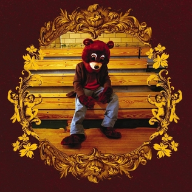

Discografia lui Kanye (albume)
O sa trec acum prin albumele lui Kanye si pe scurt opinia despre ele, care este cu siguranta biased si doar parerea mea proprie.
| Album | Ganduri | Piese |
|---|---|---|
|  The College Droput | Albumul de debut a lui Kanye (2004), se remarca stilul de a folosi sample-uri din soul si R&B. Kanye merge in alta directie fata de persona gangster care domina pe atunci toata scena de hip hop, abordand teme precum religia, familia si materialismul. | |
 Late Registration
Late Registration
|
Late registration (2005) poate fi vazut ca o continuare, mai rafinata a albumului de debut. Vibe-ul general e asemanator. Nu am foarte multe de zis despre el, dar e classic Old Kanye. | |
 Graduation
Graduation
|
Primele 3 albume a lui Kanye pot fi vazute ca o trilogie, sau macar scrise in aceasi cheie. Dar Graduation (2007) pentru mine albumul asta e apogeul Old Kanye, ii cimenteaza contributia in istoria hip hop. Sample-urile folosite sunt mult mai diverse, nu limitate la soul / r&b. Scris in perioada in care era foarte interesat de arta lui Takashi Murakami, cantecele sunt colorate, vibrante, vii - dar totodata se gasesc si piese puternic introspective, melancolice. Albumul e plin de piese bune, nu dai de skipuri. |
|
 Graduation
Graduation
|
Pe albumul asta (2008) Kanye o ia in alta directie, foloseste foarte mult auto-tune si sintetizatoare. De asemenea, tema general e o inima franta, si a fi ranit in dragoste - o tema destul de rara in cultura hip hop - dar care avea sa prinda multa popularitate in anii ce au urmat (Drake, Juice WRLD, etc..). Personal nu l-am gustat cat ma asteptam la prima vedere, dar poate pentru ca nu l-am prins la vremea lui - este creditat ca unul dintre cele mai influente albume ale lui, schimband puternic cursul hip hopului din perioada aia si pana astazi. | |
 My Beautiful Dark Twisted Fantasy
My Beautiful Dark Twisted Fantasy
|
Un moment pivotal in cariera lui Kanye, MBDTF(2010) il readuce pe scena dupa o perioada de controverse. Albumul a fost un succes major atat printre fani cat si critici - prin tot albumul permeaza o tema de grandoare. Din multe puncte de vedere cel mai 'complet' proiect a lui Kanye, cu feature-uri foarte bine folosite, a zguduit cultura hip hop in perioada aia. Pe langa toate piesele care emana o senzatie de putere, aici e lansat si Blame game, care e superb.
Aici il avem pe Kanye matur. E punctul de trecere intre Old Kanye si New Kanye pentru mine. |
|
 Yeezus
Yeezus
|
In Yeezus (2013), Kanye merge braila. Un album abraziv, experimental, industrial si agresiv - bine cotat de critici dar nu la fel de bine de fani. Cel mai furios album al Kanye. E foarte diferit de stilul lui de pana in acest punct. Ego-ul lui Kanye e aproape de peak, lucru care se reflecta si in numele albumului (Ye + Jesus), si prin piese precum 'I am a God'.
De aici incolo il avem clar pe New Kanye (ye). |
|
 The Life of Pablo
The Life of Pablo
|
Probabil albumul meu preferat de la Kanye. Continua sa fie experimental, dar intr-un fel total diferit de pana acum. Un album foarte greu de definit si de prins intr-un singur stil, are de toate. Spre deosebire de albumele de pana acum - care toate par finisate, TLOP se simte mai degraba ca un screenshot al constiintei in diferite momente, pura senzatie capturata in sunet. Mi se pare cel mai nuantat album al lui Kanye, dar receptia a fost mixta. Aici avem Wolves - care e cantecul care m-a facut fan Kanye. | |
 Ye
Ye
|
(2018) Un mini-album, eu il vad mai degraba ca o colectie de cantece decat un tot unitar, Kanye exploreaza teme de sanatate mentala precum si experienta lui legata de asta. Instrumentalele sunt foarte bune, a se remarca Ghost Town. Per total uplifting | |
 Kids See Ghosts
Kids See Ghosts
|
(2018) Una din cele mai reusite colaborari, Kid Cudi si Kanye imbina elemente psihedelice intr-un album hip hop unic. Tema de sanatate mentala si lupta cu propriile ganduri este prezenta si aici, intr-un fel pe care eu l-am simtit foarte incurajator. Genul de album care mi-a placut mai mult cu trecerea timpului, dar asta e oricum ceva specific la Kanye. La ~24 de minute durata, merita ascultat tot. Are multe piese pline de energie - asemanatoare pe stilul din MBDTF (Power), 'Fire' este un trip intreg concentrat in 2 minute. | |
 Jesus Is King
Jesus Is King
|
Continuand seria de albume atipice, Jesus Is King (2019) e un album cu o puternica tema crestina - cu siguranta nu e pentru toata lumea, a si primit destul de mult backlash de la fani. Mi se pare interesant cum combina creatia artistica cu credinta in acest proiect - lucru care mi se pare ca nu prea a fost facut cu succes in general, de obicei nu e o combinatie tare reusita. Pentru mine sa ascult albumul are deseori o influenta buna asupra psihicului, il simt mai curat. Exista si piese pe care nu le prea prind, dar per total un detur interesant de la stilul lui clasic. | |
| Donda | Un album pe care sincer nu l-am digerat inca, Donda (2021) se intinde pe aproape 2 ore. Nu prea am multe de spus despre el fiindca nu simt ca i-am prins spilu, dar se remarca continuarea unor teme religioase prezente in JIK. |